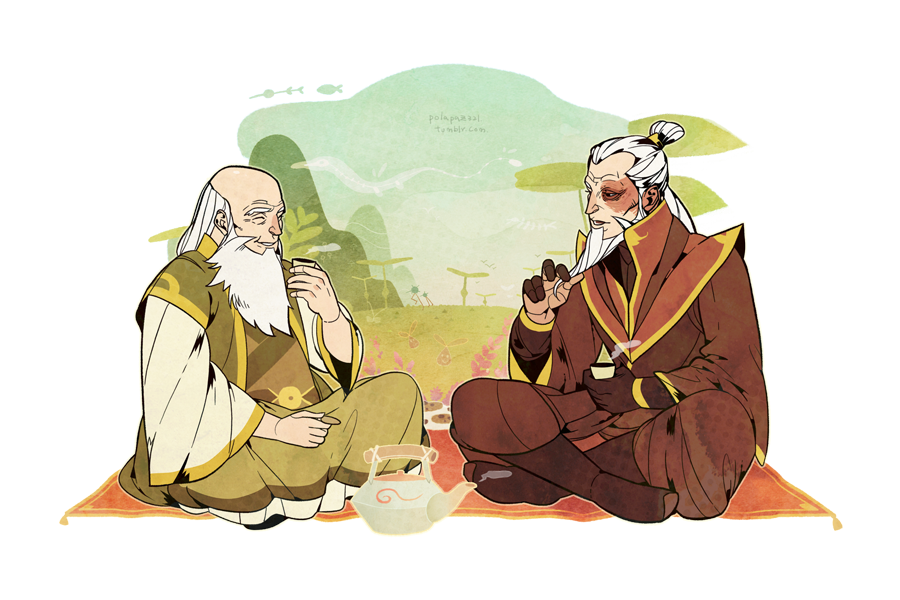
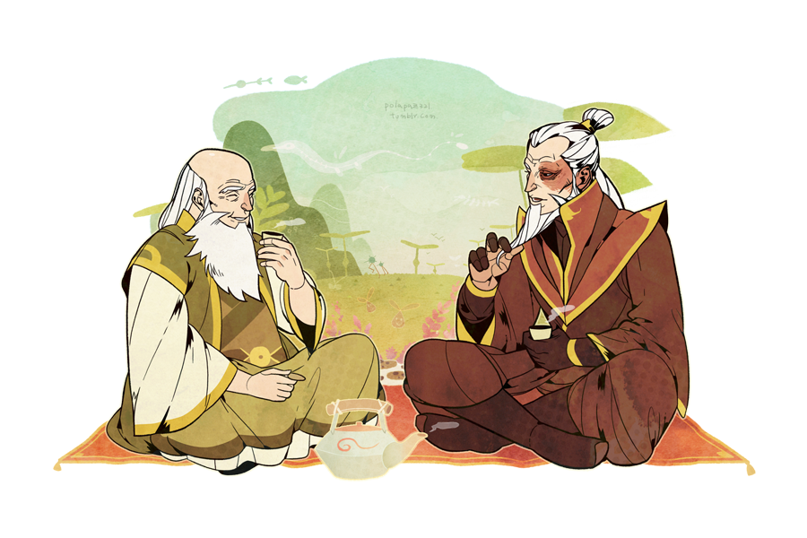
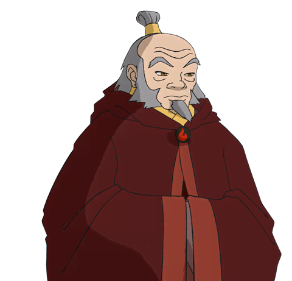
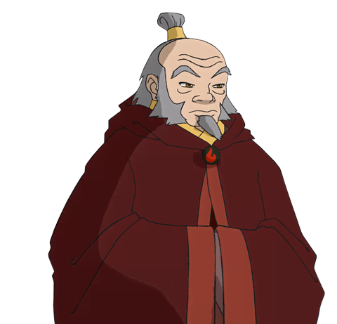

Uncle Iroh
 

 



One Of The Most Influential Philosophers
Uncles Irohs words of wisdom helps guide you through challenging times in life to perserve and to stay with a positive attitude.
“While it’s always best to believe in oneself, a little help from others can be a great blessing.”
"It is important to draw wisdom from many different places."
"Hope is something you give yourself. That is the meaning of inner strength."
"Pride is not the opposite of shame, but its source. True humilty is the only antidote to shame."